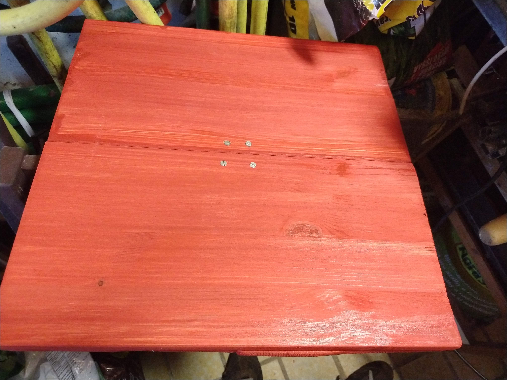

model židle aproximující původní představy
(2019/11/3)
přírodní spárovka z borovice
šrouby
vruty
4 konzole arges
2 konzole gaia
většina materiálu na výrobu židle – dřevo, konzole, část šroubů
(2019/11/9)
dřevo bylo nařezáno a zpracováno
úprava dřeva
(2019/12/7)
několik kusů zpracovaného dřeva
(2019/12/7)
úprava dřeva
(2019/12/8)
jednotlivé dřevěné díly byly natřeny červenou a bílou barvou
plechovka červené barvy
(2019/12/22)
dolní část bez opěrky byla sestavena nejdříve

částečně zpevněný sedák bez nohou
(2019/12/29)
postupné upoutání nohou
(2019/12/29)
vrut k upoutání nohou
(2019/12/29)
zatím bez konzolí
(2019/12/29)
již s konzolemi
(2020/1/11)
testování dolní části
(2020/1/11)
zakoupené konzole svíraly pravý úhel, zatímco opěrka měla se sedákem svírat úhel větší. Tvar konzolí k upevnění opěrky byl proto upraven
porovnání upravené a neupravené konzole
(2020/1/11)
druhá konzole po úpravě
(2020/1/12)
fixace opěrek byla na celé židli tím technicky nejnáročnějším
vruty k upevnění druhé opěrky
(2020/1/12)
pracovní plocha nedlouho před dokončením židle
(2020/1/12)
židle
(2020/1/12)
bych rád poděkoval svému bratu Markovi za pomoc při dopravě materiálu
VF
2020/1/17